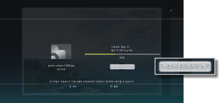
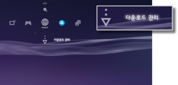

네트워크 > 백그라운드 다운로드하기
백그라운드 다운로드하기
백그라운드 다운로드란 파일 용량이 큰 데이터 및 복수의 데이터를 다운로드할 때, 다운로드하면서 다른 조작을 수행할 수 있는 기능입니다. 다운로드 중에 표시되는 화면에서 [백그라운드에서 실행]이 표시된 경우에만 조작할 수 있습니다.

알아두기
- 다운로드할 데이터의 내용이나 수에 따라서는 백그라운드 다운로드를 할 수 없는 경우가 있습니다.
- 설치를 위해 게임 또는 동영상 파일과 같은 다운로드한 데이터를 사용해야 할 수도 있습니다. 설치해야하는 데이터는 다운로드가 끝나면 각 카테고리에
 또는
또는  로 표시됩니다.
로 표시됩니다. - 설치하지 않은 데이터가 본체 스토리지에 남아 있으면 백그라운드 다운로드를 할 수 없는 경우가 있습니다.
- 백그라운드 다운로드 중에 PS3™의 전원을 끄면 다운로드 상태가 저장됩니다. 다음에 PS3™의 전원을 켜고 인터넷에 접속하면 자동으로 다운로드를 재개합니다.
- 다음의 조작을 하고 있을 때는 백그라운드 다운로드가 일시 정지됩니다. 조작이 끝나면 자동으로 다운로드를 재개합니다.
- - Blu-ray Disc 또는 DVD를 재생하고 있을 때
- - 온라인 대응 게임의 네트워크 기능을 사용하고 있을 때*
- - PlayStation®2 규격 소프트웨어를 기동하고 있을 때
- - 음성/화상 대화를 하고 있을 때
- - 시스템 업데이트를 하고 있을 때
- - 그 외
 (설정)에서 설정 항목을 조작하고 있을 때 등
(설정)에서 설정 항목을 조작하고 있을 때 등
*
게임을 종료할 때까지 백그라운드 다운로드가 일시 정지됩니다.
중요
- PS3™에서 일부 PlayStation®2 또는 PlayStation® 규격 소프트웨어가 종래의 PlayStation®2 또는 PlayStation®에서와 다르게 동작하거나 적절히 동작하지 않는 경우가 있습니다.
- 또한 일부의 PS3™는 PlayStation®2 규격 디스크의 재생에 대응하지 않습니다. 상세한 사항은 [재생할 수 있는 디스크의 종류에 대하여], 각 지역 웹 사이트 또는 제품에 동봉된 사용설명서를 참조해 주십시오.
다운로드 관리
백그라운드 다운로드를 하는 중에만 표시됩니다.  (인터넷 브라우저) 또는
(인터넷 브라우저) 또는  (PlayStation®Store)에서 백그라운드 다운로드 중인 데이터의 상태를 확인하거나 다운로드를 취소할 수 있습니다.
(PlayStation®Store)에서 백그라운드 다운로드 중인 데이터의 상태를 확인하거나 다운로드를 취소할 수 있습니다.  (네트워크)에서
(네트워크)에서  (다운로드 관리)를 선택합니다.
(다운로드 관리)를 선택합니다.

다운로드 상태 확인하기
다운로드 상태를 확인할 데이터의 아이콘을 선택하고  버튼을 누른 후 옵션 메뉴에서 [진행 상황]을 선택합니다.
버튼을 누른 후 옵션 메뉴에서 [진행 상황]을 선택합니다.
다운로드 취소하기
다운로드를 취소할 데이터의 아이콘을 선택하고 버튼을 누른 후 옵션 메뉴에서 [취소]를 선택합니다. 다운로드를 취소하면 (다운로드 관리)에서 삭제됩니다.
다운로드 일시 정지/재개하기
다운로드를 일시 정지할 데이터의 아이콘을 선택하고 버튼을 누른 후 옵션 메뉴에서 [일시 정지]를 선택합니다. 다운로드를 재개하려면 다시 한번 아이콘을 선택한 후 버튼을 눌러 옵션 메뉴에서 [재개]를 선택합니다.
알아두기
- 일시 정지하면 아이콘에
 가 표시됩니다.
가 표시됩니다. - 복수의 데이터를 다운로드할 때 그중 하나의 다운로드를 일시 정지하면 다음 데이터의 다운로드가 자동으로 시작됩니다.
모든 다운로드 일시 정지하기
임의의 아이콘을 선택하고 버튼을 누른 후 옵션 메뉴에서 [모두 일시 정지]를 선택합니다.
모든 다운로드 재개하기
다운로드에 대한 아이콘을 선택하고 버튼을 누른 후 옵션 메뉴에서 [모두 재개]를 선택합니다.